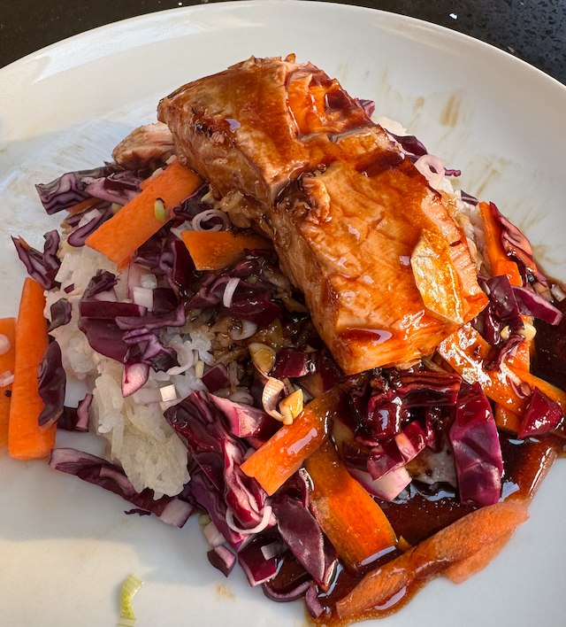

Salmon Bento

Serves: 4
Cook Time: 45 min
From reddit.
Ingredients
- 500ml sticky rice
- Cucumber and radish pickle
- ½ cucumber, sliced to thin strips
- 6 radishes, sliced thin
- 1 tbsp rice wine vinegar
- 1 tbsp sesame oil
- ¼ tsp sugar
- Salmon
- 2 tbsp rice wine vinegar
- 2 tbsp soy sauce
- 4cm ginger, grated
- 2 garlic cloves, grated
- 1 lemongrass, bashed, chopped fine
- 4 salmon fillets
- Veg
- ½ carrot, sliced matchsticks
- ¼ red cabbage, sliced thin
- 3 spring onions, diced
- Teriyaki sauce
- 3 tbsp rice wine vinegar
- 2 tbsp soy sauce
- 2 tbsp teriyaki sauce
- 2 tbsp sunflower oil
Method
Rice. Start the rice cooking.
Pickle. Whisk together the sesame oil, vinegar and sugar. Add the copped veg. Set aside to pickle.
Salmon. Mix the marinade ingredients together and add the salmon. I don't add salt until cooking the salmon, so I can better judge how much I'm adding.
Veg. Dice up the veg as described in the ingredients, then set aside in a bowl.
Teriyaki sauce. In a small pan on low heat, warm the ingredients until thickened.
Salmon. Set a frying pan on hot. Add sunflower oil, salmon, salt and pepper. Fry the salmon for a few min, then flip and fry for a few min more.
Assemble. Pile the rice on the plate, then teriyaki, then veg, then teriyaki, then salmon. Serve the pickle on the side.